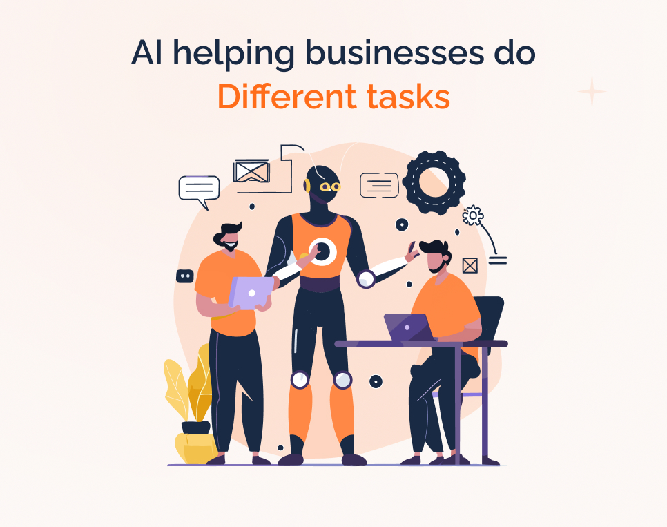
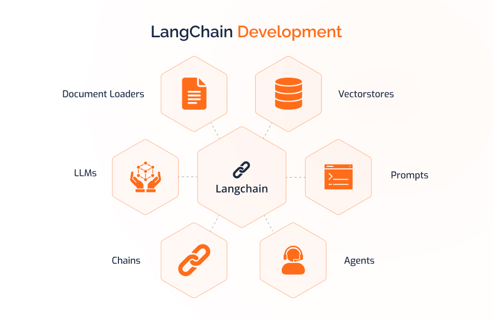
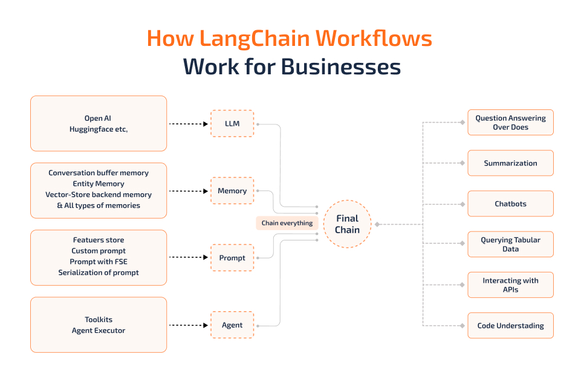

AI powered solutions are transforming the way businesses operate and how they serve customers with many businesses large and small implementing AI in their everyday processes. LangChain Development comes in as a great catalyst for this helping businesses create highly intelligent applications by using existing LLM platforms and their AI models. Now, I understand that as a business owner you may not be aware of LangChain and why it matters to your business. Which is why in this blog we are going to take a deep plunge into LangChain, AI and how these technologies can help your business transform your operations and provide customers with better experiences.

Whether you’re a retainer, an enterprise SaaS platform or an app development company looking to improve your customer retention and engagement LangChain Development can help you create scalable solutions that you can implement to improve the capabilities of your application. There used to be a time when artificial intelligence was a plaything of researchers and you had to spend a lot of money and invest a lot of your time to build AI tools for your business. However, the technology has gotten much more advanced and we now have flexible tools that we can use to rapidly build AI solutions. So without wasting any time, let's take a closer look at LangChain and how it can help you grow your business by multiple folds through LangChain Development.
Let’s get started.
Why is LangChain Development So Popular in 2025?
I’m sure that by now you know about large language models or LLMs like ChatGPT, Gemini and Claude and have used them for your everyday activities. Most people around the world today have at least heard of ChatGPT and many people including students are now using these LLMs as part of their everyday workflows. And apart from using these LLMs we use many other applications everyday that have some sort of AI component in them. What you may not have realized is that many of these applications use LangChain Development to access these AI capabilities. Let’s see why.
The reason LangChain is so popular with businesses is because it is an open source framework that you can use to seamlessly connect large language models with your applications and enable AI features. Additionally, it also gives you access to many tools that you can use to manage your AI driven workflows which include prompt engineering, memory and external data retrieval. The great thing about LangChain is that it allows businesses to build highly scalable and automated AI solutions without having to train AI models or have deep expertise in that field of study. LangChain Development is a quicker way for businesses to use existing LLMs and build applications that plug into them and can generate relevant responses and perform desired actions.
- E-Commerce: Many companies use AI for personalized shopping assistants and AI powered recommendation engines.
- Healthcare: Patient support systems and automated medical documentation is very popular in 2025.
- Finance: Many big financial companies are using AI for things like financial analysis and fraud detection.
- Legal: Businesses in the legal space are using AI for things like contract analysis and summarization of legal documents.
LangChain Development has the potential to do a lot more than these tasks but the reality is that you are only limited by your imagination. Large language models we have today are so powerful and most importantly accessible that AI is no longer for only big businesses and conglomerates. Even small businesses and shops can leverage AI to bring transformative benefits to their business and provide customers with better experiences without having to reinvent the wheel.
What is LangChain?
In a nutshell Langchain is a Python based framework specifically designed to make AI models integrate easily and seamlessly. In the past most AI was custom made for specific purposes and if you were a business wanting to integrate AI into your applications you had to spend a lot of time and money for the development. LangChain Development simplifies this process and acts as a bridge between large language models like GPT-4 and your applications. LangChai provides you with very structured workflows that combine AI reasoning, memory and tool usage. It also enables features like multi step interactions where you applications will be able to generate responses based on user inputs dynamically.
But wait if that wasn’t enough LangChain works a little differently than traditional AI and the model usage is much more efficient. With LangChain you can enable chaining of multiple AI calls and external data retrieval. LangChain Development is very flexible and you can use the framework to build solutions like AI assistants, automated content generators and other data driven applications.
How does LangChain work?
LangChain has many features and components which makes it a superior choice when you’re trying to build AI powered applications especially if you are an AI development company serving clients. The chaining mechanism is a big part of it where you can break down complex tasks and turn them into smaller AI driven steps which can help you reduce the time it takes to complete the task. Another great and obvious feature is how you can use LangChain Development to integrate large language models into your applications. LangChain is very flexible when it comes to this and supports popular LLMs like OpenAI’s GPT, Cohere, Hugging Face Transformers and other LLMs. Retrieval Augmented Generation or RAG for short is another advancement that you get with LangChain.
Through this method you can use LangChain to fetch data from external data sources like vector databases and APIs and use them inside your applications. Another simple yet important feature that you get is the memory handling. You can store contextual data and improve the responses of your AI applications through LangChain Development as more and more users interact with your application. Now comes something very advanced and probably something that you have heard a lot of lately. Agents. Because LangChain allows for agent based decision making which means that your AI will be able to decide which tools or APIs to use in a real time setting based on user queries.
Let’s Discover The Key Components of LangChain
Now that we’ve explored how LangChain works, let's take a look at what the major components of LangChain are so that you can easily approach LangChain Development and use it for your business.

- LLM wrappers give you an interface to interact with AI models like GPT-4/4o, Claude, Llama, Cohere and Gemini.
- These wrappers are used to handle API calls, manage requests and format responses for making the integration seamless.
- They also abstract complexities in AI development like authentication, token limits and error handling which makes it accessible to businesses.
- A great flexibility with LangChain is that you can switch between different AI providers without having to modify the core logic.
- For example you can use LangChain Development to build a chatbot and use the LLM wrapper with ChatGPT API to generate automated responses.
- Chains are a great feature that LangChain provides you and they are basically workflows that allow you to connect multiple aI driven tasks sequentially.
- They are a great tool for developers because you can break down complex tasks into simpler steps and where each step builds on the previous step.
- Chains come in multiple forms like the simplest form would be single step and more complex forms like multi step where the output from one model can be used as input for another model.
- Chains can be used to build many different kinds of solutions through LangChain Development like chatbots, automated report generators and AI driven decision making tools.
- Agents are essentially entities that you can use to make decisions and determine the course of action to take based on a given query.
- Agents are a little different from Chains because while Chains follow a predefined sequence Agents can be more dynamic and choose the next steps to take at runtime.
- Agents are also capable of utilizing different tools like API calls, database searches and custom functions to fetch data.
- Agents rely on large language models for reasoning, analyzing user intent and selecting appropriate tools for task execution.
- In LangChain Development Memory is what allows applications to retain contextual information from user interactions and improves your user experience.
- Without the memory each AI response would be stateless which means that the AI model you’re using would forget previous interactions from users.
- There are 2 kinds of memory; Short Term and Long Term. Short Term memory retains context within a single conversation in a session while Long Term memory can store data persistently and allow you to personalize user interaction over time.
- This feature allows you to use LangChain Development for use cases like chatbots, AI assistants and knowledge based applications where you have ongoing dialogue.
- Retrievers have the job of fetching external data from structured and unstructured data sources.
- What Vector Stores do is that they can store embeddings to enable semantic search and quick retrieval of data.
- These are widely used in RAG or Retrieval Augmented Generation applications where the AI model can fetch relevant knowledge before generating responses.
- Some very popular vector databases are Pinecone, FAISS, Weaviate and ChromaDB.
- You can integrate external APIs, databases, search engines and third party tools with LangChain Development to enhance the AI functionality of your apps.
- LangChain tools enable AI models to access real time data, perform calculations, make API calls and interact with web services seamlessly.
- Prompt templates are exactly what they sound like they are predefined prompt structures that standardize how your AI model receives inputs.
- The objective here is to reduce randomness and control variables to ensure that your AI’s responses are consistent.
- Prompt templates can also have placeholders for dynamic user input while being in a structured format.
- The benefit is that it improves accuracy, reduces hallucinations and optimizes cost efficiency.
What The Development Environment for LangChain Looks Like
Setting up the development environment for LangChain Development is pretty straightforward. Installing LangChain requires Python, pip and the API keys for the LLMs you have chosen. It is compatible with popular cloud environments for machine learning like Jupyter Notebook, VS Code and Google Colab. For setting up the AI powered applications you’re first going to need to choose an AI model. This can be large language models like GPT-4/4o, Llama, Claude or Gemini. The next step is to define the workflows of your application using Chains and Agents that we spoke about earlier. After that you can integrate APIs if you want to plug in additional data sources.
Now let’s talk about some best practices you can follow during your LangChain Development process. The first thing is to make sure that your code is modular because this will help you make your application scalable. It is also a good practice for you to use logging and debugging tools to handle any errors. The next step is to secure your APIs and sensitive data especially if you’re building software for finance or healthcare related industries. You have to make sure that you comply with global regulations like GDPR, HIPAA and SOC2 if you want to distribute your product globally.
Integrating AI Models in LangChain
Now we are going to look at how you would go about integrating your AI models in your LangChain Development process. The first thing here is to gain access to your LLMs like OpenAI, Gemini, DeepSeek or Claude. This requires you to set up API authentication and request handling. You have to understand that different AI models offer trade offs when it comes to accuracy, cost and response time. Another thing you have to do is optimize your AI responses and you can do that by fine tuning prompts to improve their relevance and also to reduce hallucinations.
You can also adjust temperature and token limits for controlled output generation. Also another major aspect of LangChain Development is to add external data sources. For this you can use vector databases like for example Pinecone and FAISS for knowledge retrieval. You can also integrate APIs if you need real time access to information like news, stock prices and weather data. From here you can also allow your application to handle advanced multimodal inputs by extending LangChain applications to process text, images and audio inputs.
Debugging LangChain Applications
To understand about debugging applications built using LangChain you have to first understand the common challenges you might have to face. Some of the issues you may encounter during your LangChain Development process are unexpected responses due to unclear prompt structures. The fix for this is of course to refine your prompt structures so that they are clear. Another issue that you may encounter is latency issues when it comes to multi step AI workflows. API rate limits and failures are some of the other issues you may encounter.
Now to solve these problems you get access to tools from LangChain so let's look into what these tools are. One very useful debugging tool that you get with LangChain is called LangSmith which you can use for monitoring your AI interactions. With LangChain Development you also get logging and tracing tools that you can use to debug your application step by step. There are also performance optimizations that you can do like using caching to reduce redundant API calls and also optimizing memory usage to make sure that you don’t get unnecessary data retention.
How LangChain Workflows Work for Businesses

Now that we have gone over some of the challenges you may have to encounter and the tools you get to solve these issues let’s look into how a LangChain workflow looks like. Creating AI driven pipeline is a big part of LangChain Development and there you define input processing output structures for AI applications. You also create chains for sequential data execution. But to understand these workflows a little better let’s see them in action with a few examples.
- AI Chatbots: For this purpose you can integrate memory and APIs into your chatbot for providing users with intelligent customer interactions.
- Document Analysis: You can use LangChain to extract insights from PDFs and reports you upload.
- Automated Report Generation: Here you can connect AI models with structured databases to generate any reports you need.
A very important part of LangChain Development is to ensure the efficiency of your workflows. And you can do that by reducing unnecessary API calls to optimize costs. You can also implement techniques like parallel processing to make execution faster.
Should You Hire a LangChain Developer For Your Project?
When you’re building AI tools it’s very important to let an expert work on your project because as we’ve already discussed in this blog there are a lot of moving parts you have to think about. The best way to do that is to hire a LangChain developer who knows the ins and outs of not just LangChain but also different AI technologies. LangChain Development reduces a lot of the complexities of integrating LLMs into your applications but you still need to be a good developer to build products using LangChain for real world use. There are a few options you have here. I’m not going to talk about anyone learning to code here because if you’re a business yes you can code yourself but if you’re not used to it then the learning curve alone will take an incredible amount of time.
What many businesses do is hire agencies with LangChain developers that know the technology well. LangChain Development is very popular today and you will be able to find AI development companies that can help you build the applications you need. You can also hire freelancers if you already have an AI expert already working in your team or if you have a clear roadmap with all the technologies well defined. But for most business owners delegating this task to an agency would make the most sense when you look at the time it would take and the costs for managing a team of developers yourself.
LanChain’s Impact On The Global Business Environment
LangChain Development is a great advancement in AI technology and if you’ve come this far then you probably already understand why it is so impactful. We used to live in a time where AI technology was more the driving force behind certain features of applications which has changed now into it being the star of the show. Every other business is boasting about how they use AI and among all the chaos smart businesses are leveraging this technology to create solutions that provide their customers with unparalleled experiences. For customer support to build tools that can create new content, AI and LangChain Development is going to revolutionize the way businesses interact with their customers.
Technical Architect
At Sparkout Tech Solutions, we believe in the power of collaboration. I take pride in fostering a team culture that encourages open communication, knowledge sharing, and continuous learning. In the ever-evolving tech landscape, I am committed to staying at the forefront of industry trends. This commitment allows us to deliver solutions that not only meet but exceed our clients' expectations